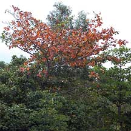
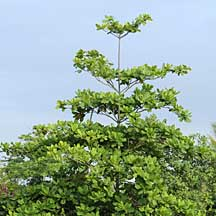
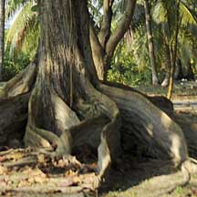
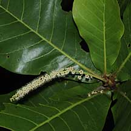
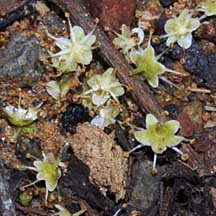
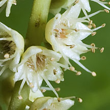
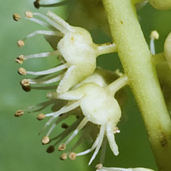
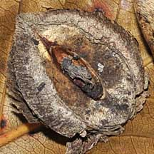
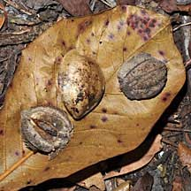
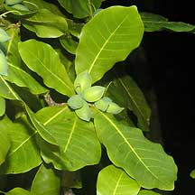

|
|
| plants text index | photo index |
| coastal plants |
| Ketapang or Sea
almond Terminalia catappa Family Combretaceae updated Oct 2016 Where seen? This spreading tree with large leaves is commonly grown in our parks and roadsides. It is also commonly seen growing wild on undisturbed shores. In fact, Corners says it is one of the most common Malayan trees in the wild on the coast and inland where it is planted for its shade in villages and along the road sides. It is found on sandy or rocky beaches and back mangroves. According to Burkill, it is a native of sandy coasts in Malaya and the Pacific but has been cultivated "far beyond its natural area". It is also called the Tropical almond tree. According to Corners, the tree sheds its leaves twice a year, in January or February and in July or August. Before falling off, the leaves turn vivid red, in a few cases, yellow. According to Burkill, this habit is "peculiar among Malayan trees" and make the trees very conscpicuous. Such 'autumn leaves' are very rare in the tropics. After the crown is bare, all the twigs develop new leaves and the tree is freshly green. The tree then flowers after the new leaves have developed. This habit occurs even in saplings 3-4 years old. Features: A tall tree (20-35m) with a typical pagoda-shaped growth form: it sends out a single stem from the top centre. When the single stem reaches a good height, it sends out several horizontal branches. The bark is grey, fissured and slightly flaky. The tree often has buttress roots. Leaves large spatula-shaped (15-30cm long, 9-18cm wide) thin leathery, arranged in a spiral at the tip of the twig. Young leaves reddish. Leaves turn yellow and red and drop off up to twice a year. Many tiny white flowers emerge on long spikes (10-12cm long). The flowers lack petals and only have a star-shaped calyx. Male flowers are found at the tips of the spike, female flowers at the bottom of the spike. The flowers are said to smell bad. The fruit is almond-shaped (4-8cm long), developing in clusters, green ripening yellow. The fruit has a thick, leathery, corky outer layer enclosing air cavities, with a hard thick stone in the centre. Inside the stone is a sliver of edible kernel composed of tightly coiled seed-leaves of the embryo. But this is difficult to extract. The fruit floats and is able to survive for many days in water, during which time the fibrous outer coating rots away. Role in the habitat: According to Corners, fruit bats eat the husk of the fruit. According to Giersen, besides bats, the fruits are also dispersed by monkeys and by water. Sometimes other similar trees are mistaken for Sea almond. Here's more on how to tell apart Sea almond and other similar trees on the shores. Human uses: In Singapore, aquarists often put the leaves in their aquariums as they have an antibacterial effect due to the release of tannic and humic acid, which is believed to promote the fish health and provide a calming effect. According to Burkill, the timber is considered good as it is elastic, easy to work and seasons well. It is used interchangeably in some places as Penaga Laut (Callophyllum innophylum) for building things that need to be tough and durable such as houses, boats and carts. Although the embryo is edible, tasting like almonds, it is not worth the effort to extract. Medicinal uses include the bark to treat dysentery, leaves applied to rheumatic joints, juice of young leaves for headache and colic. According to Wee, the leaves are used in the Philippines to expel intestinal worms. |
 'Autumn colours' before the tree sheds its leaves. Chek Jawa, Oct 01  Typical 'pagoda' growth form. Changi, Apr 09  Often with buttress roots. Pulau Hantu, Feb 10  Chek Jawa, Sep 09 |
|
 Fallen flowers on the ground. Chek Jawa, Mar 09 |
 Lazarus, Apr 12 |
 Lazarus, Apr 12 |
|
 The embryo is edible but not worth the effort to extract. |
 Sungei Buloh Wetland Reserve, Jan 09 |
 St. John's Island, Aug 04 |
| Ketapang on Singapore shores |
| Photos of Ketapang for free download from wildsingapore flickr |
| Distribution in Singapore on this wildsingapore flickr map |
|
Links
References
|
|
|